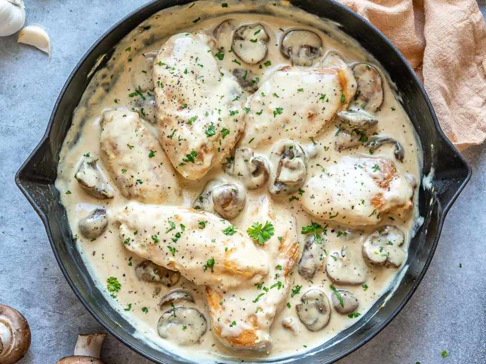

Romantic Chicken with Artichokes and Mushrooms
Easy, moist, flavorful and aromatic -- the white wine, artichokes and mushrooms make this chicken dish the to way to any man's heart! Delicious served with buttered noodles and fresh greens.

Ingredients
4 skinless, boneless chicken breast halves
1 (14 ounce) can marinated quartered artichoke hearts
1 cup sliced fresh mushrooms
1 cup white wine